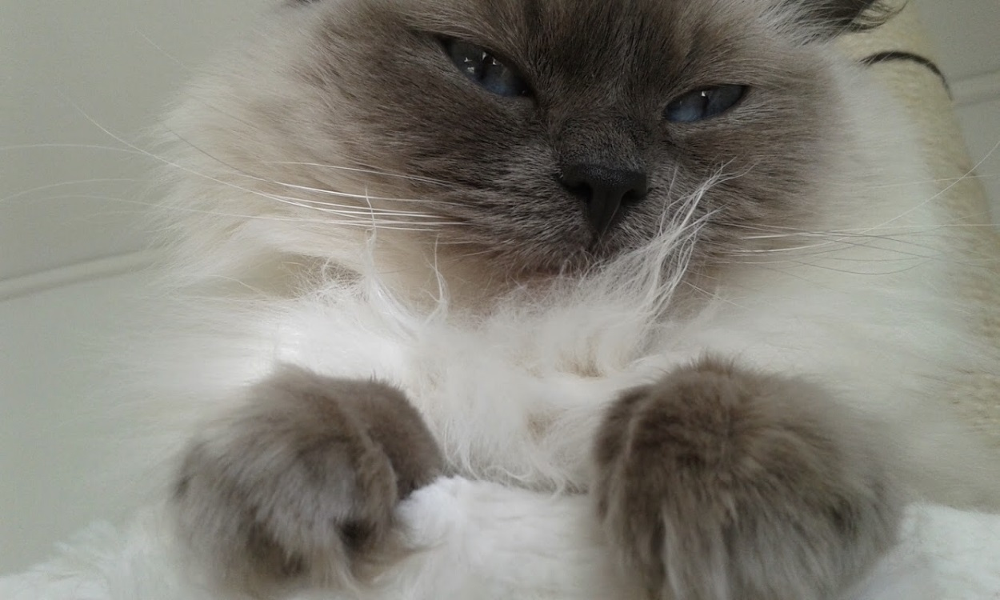

About Selma
Selma is a Ragdoll cat born in 2011. There is a lot we don't know about her first years of life, since we adopted her when she was 4 years old. What we do know is that she is a very social cat that loves to be around people, but gets grumpy as soon as she sees another cat. She sleeps most of the time but when she doesn't, she likes to play with her favourite "toy" Snören who is just a piece of string. She likes to carry him around while meowing intensely. She also likes to play with her toy mouses (she has a LOT of them) and when she thinks we're not looking she tries to eat all our phone-chargers. She is very fluffy and soft and loves all the scritches!
